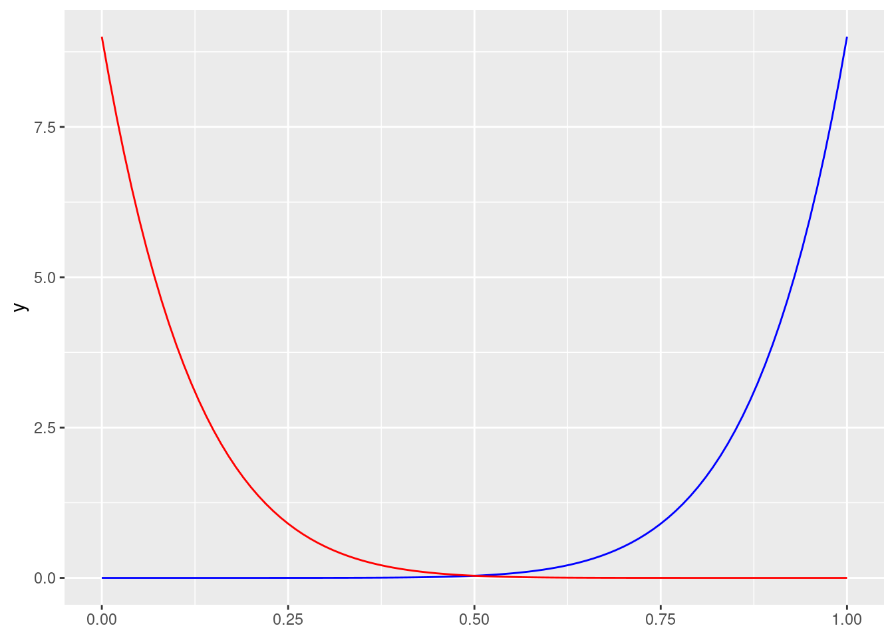
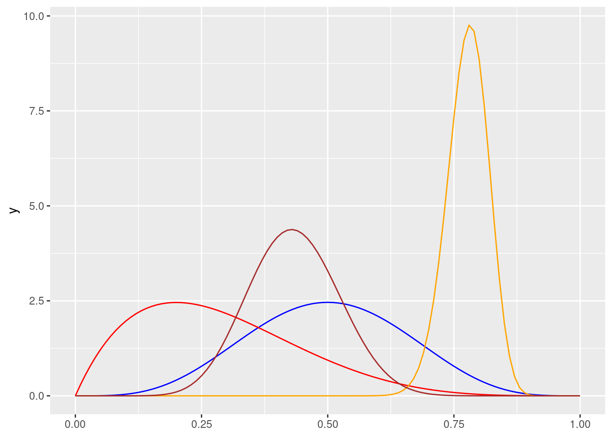
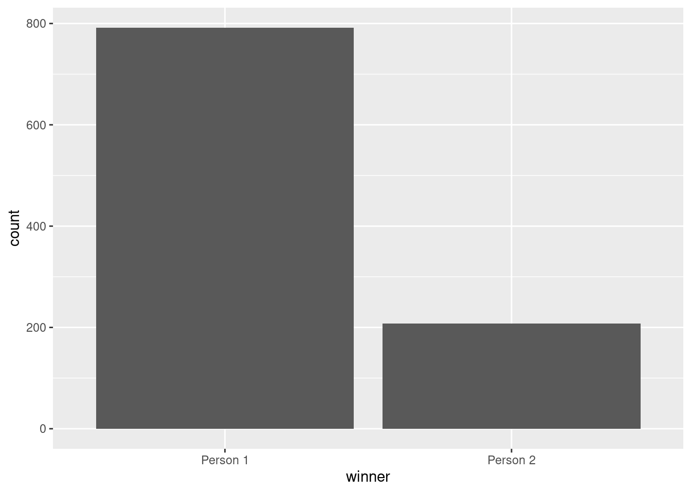

One needs to plot these to get them looking correctly. Trial and error until the data looks reasonable. You may also wind up with negative numbers when that does not make any sense. You may need to do a truncated normal distribution check out this 📦 https://github.com/olafmersmann/truncnorm This has a function that has arguments that sets an optional max and min value.
set.seed(1234)plot_data <-tibble(fake_age =rnorm(1000, mean =14, sd =5))head(plot_data)
I feel I need to understand this distribution but it is not quite sinking in.
Beta distributions range from 0-1 and take the arguments of shape1 and shape2 and useful for percentages–thinking batting averages. This post is helpful. The formula is helpful–if I can display it correctly
\[
\frac{6}{6 + 4}
\]
set.seed(1234)plot_data <-tibble(exam_score =rbeta(1000, shape1 =6, shape2 =4)) %>%# rbeta() generates numbers between 0 and 1, so multiply everything by 10 to# scale up the exam scoresmutate(exam_score = exam_score *10)ggplot(plot_data, aes(x = exam_score)) +geom_histogram(binwidth =1, color ="white") +scale_x_continuous(breaks =0:10)
ggplot() +geom_function(fun =~dbeta(.x, shape1 =9, shape2 =1), color ="blue") +geom_function(fun =~dbeta(.x, shape1 =1, shape2 =9), color ="red")

ggplot() +geom_function(fun =~dbeta(.x, shape1 =5, shape2 =5), color ="blue") +geom_function(fun =~dbeta(.x, shape1 =2, shape2 =5), color ="red") +geom_function(fun =~dbeta(.x, shape1 =80, shape2 =23), color ="orange") +geom_function(fun =~dbeta(.x, shape1 =13, shape2 =17), color ="brown")

Okay, I see it now– its the percentage not the total and that is what I am trying to figure it out. The distributions are split up almost in quarters and if you are interested in the red distribution one could fiddle with shape1 at 2 and shape 2 at 5. ##E
# A tibble: 2 × 2
winner n
<chr> <int>
1 Person 1 792
2 Person 2 208
## # A tibble: 2 × 2## winner n## <chr> <int>## 1 Person 1 792## 2 Person 2 208ggplot(fake_elections, aes(x = winner)) +geom_bar()

The rbinomhas two arguments;
size: the number of times a thing happens
prob: the probability
set.seed(1234)rbinom(5, size =20, prob =0.6)
[1] 15 11 11 11 10
## [1] 15 11 11 11 10
A better way to do i
set.seed(1234)rbinom(5, size =1, prob =0.6)
[1] 1 0 0 0 0
## [1] 1 0 0 0 0
set.seed(12345)plot_data <-tibble(thing =rbinom(2000, 1, prob =0.6)) %>%# Make this a factor since it's basically a yes/no categorical variablemutate(thing =factor(thing))plot_data %>%count(thing) %>%mutate(proportion = n /sum(n))
# A tibble: 2 × 3
thing n proportion
<fct> <int> <dbl>
1 0 840 0.42
2 1 1160 0.58
Independent random events that combine into grouped events. For example, traffic, number of people coming into a coffee shop; when they leave the coffee shop.
The function for this distribution is rpois and takes one argument:
lambda rate or speed the process follows. How fast a process increases fro 1 to two.
set.seed(123)# 10 different familiesrpois(10, lambda =1)
The code below provides examples of creating fake data sets; these don’t
set.seed(1234)# Set the number of people here once so it's easier to change latern_people <-1000example_fake_people <-tibble(id =1:n_people,opinion =sample(1:5, n_people, replace =TRUE),age =runif(n_people, min =18, max =80),income =rnorm(n_people, mean =50000, sd =10000),education =rtruncnorm(n_people, mean =16, sd =6, a =8, b =24),happiness =rbeta(n_people, shape1 =2, shape2 =1),treatment =sample(c(TRUE, FALSE), n_people, replace =TRUE, prob =c(0.3, 0.7)),size =rbinom(n_people, size =1, prob =0.5),family_size =rpois(n_people, lambda =1) +1# Add one so there are no 0s) %>%# Adjust some of these columnsmutate(opinion =recode(opinion, "1"="Strongly disagree","2"="Disagree", "3"="Neutral","4"="Agree", "5"="Strongly agree")) %>%mutate(size =recode(size, "0"="Small", "1"="Large")) %>%mutate(happiness =rescale(happiness, to =c(1, 8)))head(example_fake_people)
# A tibble: 6 × 9
id opinion age income education happiness treatment size family_size
<int> <chr> <dbl> <dbl> <dbl> <dbl> <lgl> <chr> <dbl>
1 1 Agree 31.7 43900. 18.3 7.20 TRUE Large 1
2 2 Disagree 52.9 34696. 17.1 4.73 TRUE Large 2
3 3 Strongly a… 45.3 43263. 17.1 7.32 FALSE Large 4
4 4 Agree 34.9 40558. 11.7 4.18 FALSE Small 2
5 5 Strongly d… 50.3 41392. 13.3 2.61 TRUE Small 2
6 6 Strongly a… 63.6 69917. 11.2 4.36 FALSE Small 2
## # A tibble: 6 × 9## id opinion age income education happiness treatment size family_size## <int> <chr> <dbl> <dbl> <dbl> <dbl> <lgl> <chr> <dbl>## 1 1 Agree 31.7 43900. 18.3 7.20 TRUE Large 1## 2 2 Disagree 52.9 34696. 17.1 4.73 TRUE Large 2## 3 3 Strongly agree 45.3 43263. 17.1 7.32 FALSE Large 4## 4 4 Agree 34.9 40558. 11.7 4.18 FALSE Small 2## 5 5 Strongly disagree 50.3 41392. 13.3 2.61 TRUE Small 2## 6 6 Strongly agree 63.6 69917. 11.2 4.36 FALSE Small 2
For my purposes, I want to simulate something to the opinion. However, my data reference is not uniform so I could put in my mean and sd and to get an accurate simulation.
About
Kevin is a nonprofit data professional operating out of Lakeland, Florida.
My expertise is helping nonprofits collect, manage and analyze their program data.